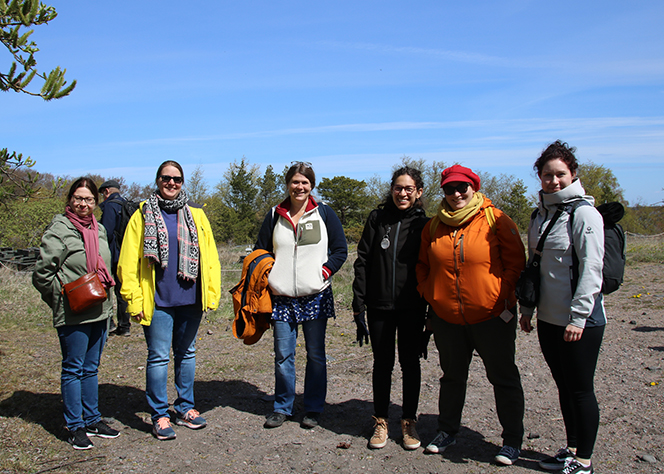

Research highlights and the Cell Fate Lab in the media:
1 September 2022
Congratulations to Elenaé, Kai-Lan and Cecilia for publication of the review Reversible and bidirectional signaling of notch ligands (Vázquez-Ulloa et al., 2022, Crit Rev Biochem Mol Biol). We thank Marcela Lizano for the collaboration!
25-26 August 2022
Marjaana, Noora, Sami and William gave poster presentations at the InFLAMES Flagship-led 31st Biocity Symposium, Solution is in Immunity, with the following titles:
- “The Notch ligand Jagged1 regulates extracellular matrix production and alignment in breast cancer” (Marjaana)
- “Mechanoregulation of Jagged1 in cardiovascular system” (Noora)
- "Jagged1-Notch2 axis initiates vascular smooth muscle cell differentiation and recruits Notch3 as a late effector” (Sami)
- "Regulation of estrogen receptor alpha by Pim kinases in luminal a breast cancer" (William)
12 August 2022
Congratulations to Cansu and Cecilia for the publication of Notch signaling regulates strain-mediated phenotypic switching of vascular smooth muscle cells (Karakaya et al., 2022, Front Cell Dev Biol). Thank you to Sandra Loerakker and all the other collaborators!
25-29 July 2022
Elenaé gave a presentation with the title "Jagged1 processing and reverse signaling modulation by Human Papilloma Virus" at the DNA Tumour Virus meeting 2022 in Cambridge, UK.
12 July 2022
Congratulations to Cecilia for the publication of Computational analysis of the role of mechanosensitive Notch signaling in arterial adaptation to hypertension (van Asten and Ristori et al., 2022, J Mech Behav Biomed Mater). Thank you to all the collaborators!
4-5 July 2022
Kai-Lan represented the Cell Fate Lab with a poster presentation at the European Organ-on-chip society meeting in Grenoble, France.
16 June 2022>
Cecilia gave a remote talk titled “Influences of the Microenvironment on Notch Signaling Activity” at the 10th International Symposium and Scientific Meeting on Alagille Syndrome (ALGS meeting).
9 June 2022
Read more about Dr. Tommaso Ristori’s visit to Turku in the InFLAMES blog post by Diosa and Kalen: Life through a mathematicians’ eye (InFLAMES Flagship Blog). Check out the other posts by InFLAMES researchers at https://blogit.utu.fi/inflames/en/ (English) or https://blogit.utu.fi/inflames/ (Finnish).
23-25 May 2022
Cecilia hosted Cell Fate Lab alumnus Dr. Tommaso Ristori who gave a CellMech/InFLAMES seminar talk titled “Computational modelling guides the research and control of angiogenesis”. Thank you Tommaso for a great interdisciplinary presentation as well as all the fruitful discussions!
24 May 2022
Congratulations Marjaana, for being awarded a grant for PhD studies by the Finnish Cultural Foundation!
24 May 2022
Elena presented her project “Synthetic biology activates Notch signalling” as part of the ÅAU BioSeminar series.
22-26 May 2022
William represented the Cell Fate Lab at EMBO Workshop; Reversible phosphorylation, signal integration and drug discovery in Vougliameni, Greece.
19 May 2022
Cecilia, Kalen, Noora and Kati took part in the InFLAMES summer meeting at Örö island.

18 May 2022
Congratulations Cecilia for the publication of Optogenetic control of NOTCH1 signaling (Kałafut et al., 2022, Cell Commun Signal) and thank you to the Rivero-Müller group for collaboration. Please check out the video abstract for the article, “OptoNotch: Using light to activate Notch signaling”.
12-13 May 2022
Cecilia, Diosa and Kati represented the Cell Fate Lab and Åbo Akademi University in the Tumor-LN-oC M12 meeting in Eindhoven, the Netherlands, while Kalen joined the meeting remotely. We thank Ye Wang, Jaap den Toonder and TU/e for hosting!
9-11 May 2022
Cecilia gave a talk titled "Mechanosensitive Notch signaling regulates structural homeostasis of the arterial wall" at the EMBO Workshop "Building Networks: Engineering in Vascular Biology" at EMBL Barcelona, Spain.
10 May 2022
Ezgi gave a presentation at the ÅAU BioSeminar series with the title “Can we repair muscle degeneration by using 3D printing and sequential drug delivery?”
28 April 2022
Cecilia hosted a Frontiers of Science seminar series presentation by InFLAMES visiting professor Christopher Chen. Professor Chen’s group has engineered numerous advanced model systems to mimic cardiovascular microenvironments. A warm thank you to Professor Chen for a very interesting and interdisciplinary presentation!
27 April 2022
Congratulations to Laura, Oscar and Cecilia for the publication of Engineered patterns of Notch ligands Jag1 and Dll4 elicit differential spatial control of endothelial sprouting (Tiemeijer and Ristori et al., 2022, iScience). We warmly thank all the collaborators!
14 April 2022
Cecilia hosted a presentation by InFLAMES visiting professor Hans Clevers within the Frontiers of Science seminar series. Professor Clevers is renowned for his work with organoids as model systems, stem cells and Wnt signaling and has recently been appointed the Head of Pharma Research & Early Development at Roche. We thank professor Clevers for an inspiring presentation!
29 March 2022
Amandine represented the Cell Fate Lab in the ÅAU BioSeminar series with a talk titled “A biomagnetic platform for controlled Notch activation”.
22 March 2022
Congratulations to Cecilia and Kati for the publication of GIT1 protects against breast cancer growth through negative regulation of Notch (Zhang et al., 2022, Nat Commun). A warm thank you to the Per Uhlén lab and all the other collaborators!
15 March 2022
Congratulations Marjaana, for being awarded a grant for PhD studies from the Swedish Cultural Foundation in Finland!
8-9 March 2022
Valeriy represented the Cell Fate Lab at the 1st World Neuroendocrine Tumor Forum in Barcelona, Spain.
7 March 2022
Congratulations to William for receiving a Magnus Ehrnrooth Foundation grant for PhD studies!
1 March 2022
Cecilia gave a presentation at the ÅAU BioSeminar series with the title “Cellular decisions in complex environments”.
15 February 2022
Congratulations to Laura, Sami and Cecilia for the publication of their review article Engineering tissue morphogenesis: taking it up a Notch (Tiemeijer and Sanlidag et al., 2022, Trends Biotechnol). We thank Carlijn Bouten for the collaboration!
15 February 2022
Freddy represented the Cell Fate Lab at the ÅAU BioSeminar series with a talk titled “Jagged1 in vascular mechanosensing”.
8 February 2022
Elmeri Kiviluoto joins the Cell Fate Lab as our new research assistant. Welcome Elmeri!